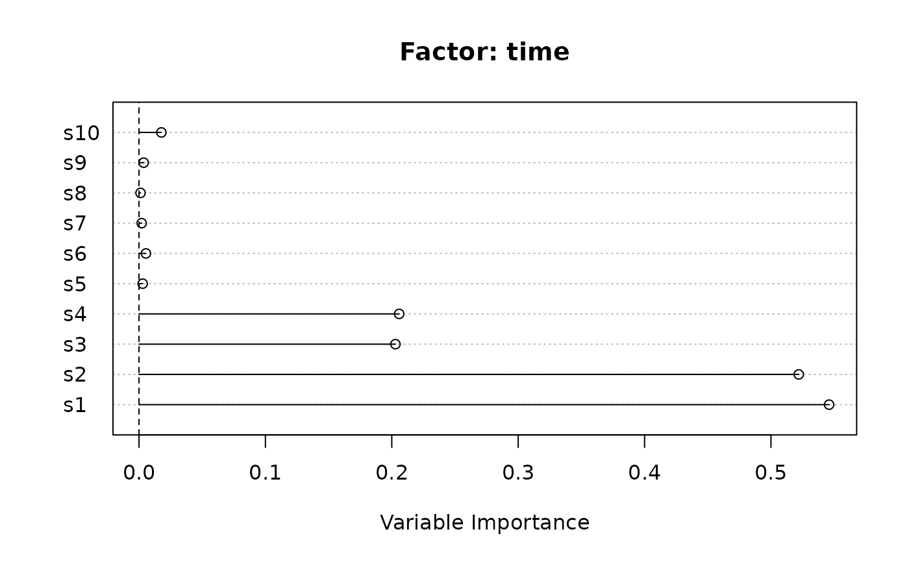
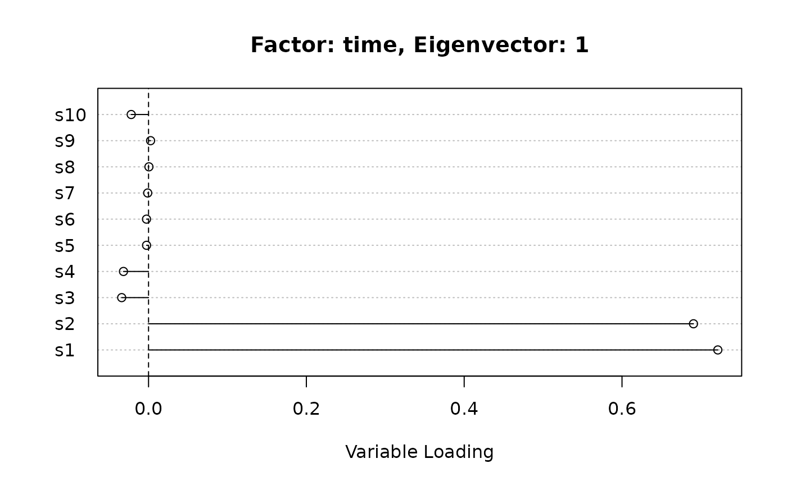

plot.asca.RdGeneral method for plotting an asca object
# S3 method for asca plot( x, term = 1, type = c("varimp", "loadings", "scores"), term2 = term, eig = 1, eig2 = 2, sort = NULL, validation = FALSE, n.var = min(30, ncol(x$x)), main = NULL, ... )
| x | the |
|---|---|
| term | the term of the decomposition |
| type | a character string specifying the type of the plot, see details |
| term2 | optional. The second term to be displayed. Used only if the type is |
| eig | the eigenvector of the term |
| eig2 | optional. The eigenvector of |
| sort | should de variable be ordered according to their importance? FALSE by default |
| validation | should the plot include information on the validation? Used only if type is |
| n.var | number of variables to be displayed |
| main | title of the plot |
| ... | additional arguments passed to the base plotting functions |
The method allow for three type of plots. varimp plot shows the contribution of the initial variables
to one of the terms of the decomposition. When the argument validation is true, the plot also shows
the confidence intervals obtained during validation. loadings plot allows to visualize the weight
of the initial variables on the eigenvectors of a specific decomposition term. Also here, the validation
argument will include the confidence intervals.
The last type of plot (scores) displays the position of the samples on a projection plane which
potentially combines the different decomposition terms
## load the data data("synth_count_data") ## perform the ASCA decomposition ASCA_test <- ASCA( d = synth_count_data$design, x = synth_count_data$counts, f = "time + treatment + time:treatment", glm_par = list(family = poisson()) ) ## plot the variable importance for the "time" term plot(ASCA_test, type = "varimp", term = "time")## for the same term, the loadings are instead ... plot(ASCA_test, type = "loadings", term = "time", eig = 1)## decomposition with a combination of treatment and interaction ASCA_test_comb <- ASCA( d = synth_count_data$design, x = synth_count_data$counts, f = "time + treatment + time:treatment", comb = c("treatment","time:treatment"), glm_par = list(family = poisson()) ) ## plot the scores of eig1 for "time" and teig1 "treatment+time:treatment" mycol <- c("#081d5860", "#225ea860", "#1d91c060","#7fcdbb60", "#c7e9b460") names(mycol) <- unique(ASCA_test_comb$d$time) mypch <- c(15,1,19) names(mypch) <- unique(ASCA_test_comb$d$treatment) plot(ASCA_test_comb, type = "scores", term = "time", eig = 1, term2 = "treatment+time:treatment", eig2 = 1, col = mycol[ASCA_test_comb$d$time], pch = mypch[ASCA_test_comb$d$treatment], cex = 1)#> Validation: jacknifing turns: 100#> Error in vapply(turns, function(t) t$scores[[x]], turns[[1]]$scores[[x]]): values must be length 20, #> but FUN(X[[87]]) result is length 4## plot the variable importance with the confidence limits plot(ASCA_test_v, type = "varimp", term = "time", eig = 1, validation = TRUE)#> Error in plot(ASCA_test_v, type = "varimp", term = "time", eig = 1, validation = TRUE): object 'ASCA_test_v' not found